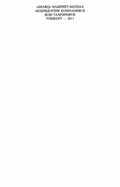

S5"Shaytanat" romanining beshinchi kitobida jinoiy olamdagi yangi avlod va Asadbek o'rtasidagi keskin kurashlar tasvirlangan.
Ushbu asar mashhur "Shaytanat" romanining beshinchi kitobi bo'lib, jinoiy olamdagi yangi avlod vakillari va Asadbek o'rtasidagi ziddiyatlar hamda hokimiyat uchun kurash haqida hikoya qiladi. Asarda yosh jinoiy guruhlarning paydo bo'lishi va ularning eski qoidalar bilan to'qnashuvi chuqur ochib berilgan.